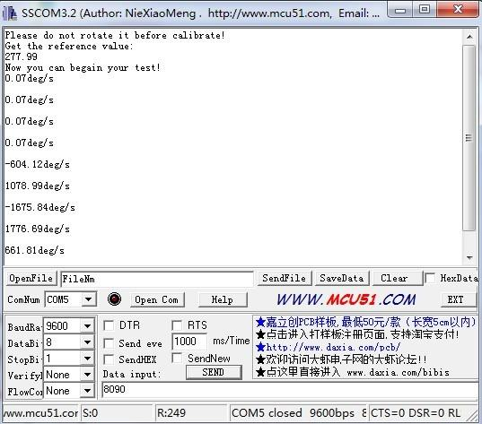
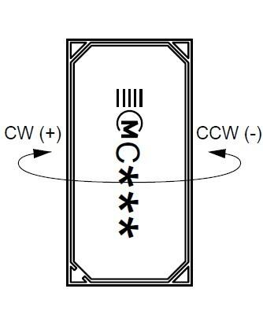

The Grove – Signal Axis Analog Gyro is based on an angular velocity sensor (Murata-ENC-03R) that uses the phenomenon of Coriolis force. It can only measure the X-axis angular velocity, which is different from other 3-Axis gyro, but with a higher speed. It can be used for the position control and attitude control like the self-balanced 2WD.
Model: SEN05091P
The module detects one-axis rotation with analog signal.
High-pass filter and low-pass filter circuit are applied to reduce the temperature drift and suppress the output noise.
Before the measurement of the angular velocity, a reference value(the sensor output at Angular Velocity=0) is required.
This value is 1.35V in default. But in order to get more accurate reference values, before the measurement,a calibration is necessary.
In this calibration, the output voltage when angular velocity =0 been sampled 200 times,
and then the average of these data will be treated as the reference value.
int sensorPin = A0; // select the input pin for the sensor
float reference_Value=0;
int sensorValue = 0; // variable to store the value coming from the sensor
void setup() {
int i;
float sum=0;
pinMode(sensorPin, INPUT);
Serial.begin(9600);
Serial.println("Please do not rotate it before calibrate!");
Serial.println("Get the reference value:");
for(i=0;i<1000;i++)
{
// read the value from the sensor:
sensorValue = analogRead(sensorPin);
sum += sensorValue;
delay(5);
}
reference_Value = sum/1000.0;
Serial.println(reference_Value);
Serial.println("Now you can begin your test!");
}
void loop()
{
double angularVelocity;
sensorValue = analogRead(sensorPin);
angularVelocity =((double)(sensorValue-reference_Value)*4930.0)/1023.0/0.67; //get the angular velocity
Serial.print(angularVelocity);
Serial.println("deg/s");
Serial.println(" ");
delay(10);
}


1.You should have got a raspberry pi and a grovepi or grovepi+.
2.You should have completed configuring the development enviroment, otherwise follow here.
3.Connection
4.Navigate to the demos' directory:
cd yourpath/GrovePi/Software/Python/
nano grove_single_axis_analog_gyro.py # "Ctrl+x" to exit #
import time
import grovepi
# Connect the Grove Single Axis Analog Gyro to analog port A0
# SIG,NC,VCC,GND
sensor = 0
grovepi.pinMode(sensor,"INPUT")
# calibration
print "calibrating..."
sum = 0
errors = 0
for x in range(0, 100):
try:
# Get sensor value
v = grovepi.analogRead(sensor)
sum += v
#time.sleep(.05)
except IOError:
print "Error"
errors += 1
if errors == 100:
print "unable to calibrate"
raise SystemExit
reference_value = sum / (100 - errors)
print "finished calibrating"
print "reference_value =", reference_value
# ready
while True:
try:
# Get sensor value
sensor_value = grovepi.analogRead(sensor)
# Calculate angular velocity (deg/s)
velocity = ((float)(sensor_value - reference_value) * 4930.0) / 1023.0 / 0.67
print "sensor_value =", sensor_value, " velocity =", velocity
time.sleep(.5)
except IOError:
print "Error"
5.Run the demo.
sudo python grove_single_axis_analog_gyro.py
Grove - Signal Axis Analog Gyro Eagle File
Signal Axis Analog Gyro datasheet
Demo code on github
Copyright (c) 2008-2016 Seeed Development Limited (www.seeedstudio.com / www.seeed.cc)